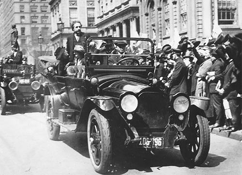

Đoàn xe hộ tống ở thành phố New York, ngày 4 tháng Tư năm 1921
Trong bài báo ông viết cho tờ The Times của London sau khi thuyết tương đối được chứng thực, Einstein đã châm biếm rằng nếu mọi thứ xấu đi, thì người Đức sẽ không còn xem ông là đồng bào nữa, mà là một tay Do Thái Thụy Sĩ. Đó là một nhận xét tinh tế, và càng tinh tế bởi ngay khi đó Einstein đã biết có phần nào sự thật khó chịu trong đó. Cũng trong tuần đó, trong một bức thư gửi cho bạn mình là Paul Ehrenfest, ông miêu tả bầu không khí ở Đức. Ông viết: “Chủ nghĩa bài Do Thái ở đây rất mạnh. Toàn bộ chuyện này rồi sẽ dẫn đến đâu đây?”
Sự nổi lên của chủ nghĩa bài Do Thái của người Đức sau Chiến tranh Thế giới Thứ nhất gây ra sự phản kháng trong Einstein: nó khiến ông càng đồng nhất mạnh mẽ hơn với di sản và cộng đồng Do Thái của mình. Nằm ở một cực là những người Do Thái Đức, như Fritz Haber, sẵn sàng làm mọi thứ có thể, bao gồm cả việc cải đạo sang Công giáo để hòa nhập với người Đức, và họ thúc giục Einstein làm điều tương tự. Nhưng Einstein đã chọn cách ngược lại. Đúng khi trở nên nổi tiếng, ông cũng đi theo sự nghiệp phục quốc Do Thái. Ông không chính thức gia nhập tổ chức phục quốc Do Thái nào, vì thế ông không tham gia hay đi lễ tại bất cứ giáo đường Do Thái nào. Nhưng ông đã làm rất nhiều để hỗ trợ các khu định cư của người Do Thái ở Palestine, phát huy bản sắc dân tộc trong các cộng đồng Do Thái ở khắp nơi và phản bác mong muốn của những người theo xu hướng hòa nhập.
Nhà lãnh đạo tiên phong của phong trào Phục quốc Do Thái, Kurt Blumenfeld126, là người kêu gọi ông. Năm 1919, ông này đã ghé thăm Einstein ở Berlin. Blumenfeld nhớ lại: “Anh ta đặt ra những câu hỏi hết sức khờ khạo.” Trong những câu hỏi của Einstein, có những câu như: Do Thái là một dân tộc có thiên phú về tinh thần và trí tuệ, tại sao cần phải hiệu triệu họ để thành lập một quốc gia-dân tộc nông nghiệp? Không phải chủ nghĩa dân tộc là vấn đề, hơn là giải pháp hay sao?
Cuối cùng, Einstein cũng đồng ý tham gia sự nghiệp này. Ông tuyên bố: “Tôi, với tư cách là một con người, là người phản đối chủ nghĩa dân tộc. Nhưng với tư cách là một người Do Thái, từ ngày hôm nay, tôi là người ủng hộ các nỗ lực của phong trào Phục quốc Do Thái”. Cụ thể hơn, ông trở thành người ủng hộ việc thành lập một trường đại học mới của người Do Thái ở Palestine, sau này chính là Đại học Hebrew ở Jerusalem.
Khi quyết định gạt bỏ định đề rằng mọi hình thức chủ nghĩa dân tộc đều tồi tệ, ông thấy mình dễ nhiệt tình hơn với phong trào Phục quốc Do Thái. Tháng Mười năm 1919, ông viết cho một người bạn: “Người ta có thể thành người theo chủ nghĩa quốc tế mà không thờ ơ với các thành viên đồng tộc với mình. Mục đích chính nghĩa của phong trào Phục quốc Do Thái rất gần với trái tim tôi… Tôi mừng rằng trên Trái đất này sẽ có một mảnh đất nho nhỏ, ở đó những người anh em cùng dòng giống với chúng ta không bị xem là kẻ xa lạ.”
Việc ủng hộ phong trào Phục quốc Do Thái đặt Einstein vào thế đối nghịch với những người theo chủ trương hòa nhập. Tháng Tư năm 1920, ông được mời đến phát biểu trong cuộc họp của một nhóm như vậy, nhóm này tập trung nhau lại đề cao lòng trung thành với nước Đức, lấy tên là Những Công dân Đức thuộc Tín ngưỡng Do Thái. Ông đáp lại bằng lời buộc tội rằng họ đang tìm cách tách mình ra khỏi những người Do Thái Đông Âu nghèo khổ và kém tinh tươm hơn họ. “Liệu những người ‘Aryan’127 có thể tôn trọng những kẻ lén lút không?” ông trách.
Từ chối lời mời ở góc độ cá nhân vẫn chưa đủ. Einstein còn cảm thấy buộc phải viết một bài công kích công khai nhằm vào những người muốn hòa nhập bằng cách nói “về tín ngưỡng tôn giáo thay vì dòng giống dân tộc”128. Đặc biệt, ông xem thường thứ mà ông gọi là phương pháp “hòa nhập”, theo lối “vượt qua chủ nghĩa bài Do Thái bằng cách rũ bỏ gần như mọi thứ thuộc về Do Thái”. Việc này chẳng bao giờ có tác dụng; thực tế là, nó “có vẻ còn khá tức cười đối với người không phải là Do Thái”, vì những người Do Thái vốn sống tách rời khỏi các dân tộc khác. Ông viết: “Nguồn gốc tâm lý của chủ nghĩa bài Do Thái nằm ở việc những người Do Thái là một dân tộc chỉ làm theo luật của chính mình. Người ta có thể thấy rõ tính chất Do Thái trong vẻ ngoài, và nhận ra di sản Do Thái trong các công trình trí óc.”
Những người Do Thái thực hiện và giảng giải về hòa nhập thường là những người tự hào về di sản Đức hay Tây Âu. Vào thời điểm đó (và suốt một giai đoạn dài của thế kỷ XX) họ hay xem thường những người Do Thái ở Đông Âu như Nga và Ba Lan, những người trông kém tươm tất, không được tao nhã và ít hòa nhập hơn. Mặc dù là một người Do Thái Đức nhưng Einstein kinh sợ trước những người cùng xuất thân với mình nhưng lại vạch ra một lằn ranh rõ rệt phân biệt giữa người Do Thái ở Đông Âu và “người Do Thái ở Tây Âu”. Theo ông, kiểu phân chia này đáng bị lên án là phản bội tất cả những người Do Thái, và nó không dựa trên bất kỳ sự phân biệt đúng đắn nào. “Ở người Do Thái Đông Âu có một tiềm năng lớn về nhân tài, vật lực mà nhờ đó có thể sánh với nền văn minh cao hơn của người Do Thái Tây Âu.”
Einstein nhận thức sâu sắc, thậm chí còn hơn cả những người theo chủ trương hòa nhập, rằng chủ nghĩa bài Do Thái không phải là hệ quả của những nguyên nhân duy lý. Đầu năm 1920, ông viết: “Ở nước Đức ngày nay, sự thù ghét người Do Thái đã có những biểu hiện thật đáng sợ.” Một phần của vấn đề này là tình trạng lạm phát vượt ngoài khả năng kiểm soát. Đầu năm 1919, giá trị của đồng mark Đức chỉ còn khoảng 12 xu, giảm một nửa giá trị so với trước chiến tranh nhưng vẫn còn kiểm soát được. Đến đầu năm 1920, đồng mark thậm chí chỉ đáng giá hai xu, và giá trị của nó sụt giảm từng tháng.
Ngoài ra, là kẻ bại trận trong cuộc chiến tranh mới đó là một nỗi ô nhục. Nước Đức đã mất sáu triệu người, và buộc phải từ bỏ cả phần đất đai chứa nửa số tài nguyên của mình, lẫn tất cả các thuộc địa của nước này. Nhiều người Đức kiêu ngạo cho rằng đó hẳn là do sự phản bội. Nước Cộng hòa Weimar nổi lên sau chiến tranh, dù được hậu thuẫn bởi những người theo chủ nghĩa tự do, chủ nghĩa hòa bình và những người Do Thái như Einstein, nhưng lại bị phần lớn chế độ cũ và tầng lớp trung lưu xem thường.
Có một nhóm dễ dàng bị xem là những kẻ ngoại lai và là lực lượng hắc ám chịu trách nhiệm cho sự nhục nhã mà một nền văn hóa kiêu hãnh phải đối mặt. Einstein viết: “Người ta cần một kẻ giơ đầu chịu báng và họ bắt người Do Thái phải chịu trách nhiệm. Người Do Thái trở thành mục tiêu của sự thù hận bản năng vì họ thuộc một dân tộc khác.”
Sự bùng nổ của nghệ thuật và những tư tưởng lớn ở Đức vào thời điểm đó, như Amos Elon viết trong cuốn The Pity of It All [Điều đáng tiếc], phần lớn là nhờ công của những người bảo trợ và những người tiên phong người Do Thái trong nhiều lĩnh vực khác nhau. Điều này đặc biệt đúng trong khoa học. Như Sigmund Freud đã chỉ ra, phần nào thành công của các nhà khoa học người Do Thái là nhờ “thái độ hoài nghi có sáng tạo” xuất phát từ căn cốt của họ với tư cách là kẻ ngoài cuộc. Những người Do Thái chủ trương hòa nhập đã không thấy được sự độc ác của nhiều người Đức – những người mà họ xem là anh em đồng bào của mình – nhìn nhận thấy nơi họ với tư cách những kẻ về cơ bản là ngoài cuộc, hay như nhận xét của Einstein, là một “bộ tộc khác”.
Xung đột công khai đầu tiên của Einstein với chủ nghĩa bài Do Thái diễn ra vào mùa hè năm 1920. Một người Đức theo chủ nghĩa dân tộc có hành vi ám muội tên là Paul Weyland, một kỹ sư có qua đào tạo, đã tự biến mình thành một cây bút chiến mang nhiều tham vọng chính trị. Ông ta là một thành viên năng nổ của chính đảng dân tộc cánh hữu, đảng đã hứa, trong chương trình làm việc chính thức năm 1920 của mình, là sẽ “loại bỏ ảnh hưởng chi phối của người Do Thái xuất hiện ngày càng mạnh mẽ trong bộ máy chính quyền và trong công chúng”.
Weyland nhận thấy rằng Einstein, với tư cách là một người Do Thái rất nổi tiếng, là nguồn cơn của sự phẫn nộ và ganh ghét. Tương tự, thuyết tương đối của ông cũng có thể dễ dàng biến thành mục tiêu bởi vì nhiều người, bao gồm cả một số nhà khoa học, đã mất hết nhuệ khí trước cái cách mà nó có vẻ như đang làm suy yếu những điều tuyệt đối, và trước việc nó được xây dựng trên giả thuyết trừu tượng hơn là dựa trên thí nghiệm chắc chắn. Vì vậy, Weyland đã gửi đăng những bài báo lên án thuyết tương đối là “trò đại lừa đảo” và thành lập một tổ chức cho có (và được bí ẩn tài trợ một cách hậu hĩnh), tự xưng một cách đàng hoàng là Nhóm Nghiên cứu của các nhà khoa học Đức vì mục đích Bảo tồn nền khoa học thuần túy.
Tham gia cùng Weyland còn có một nhà vật lý thực nghiệm có danh tiếng vừa phải là Ernst Gehrcke; suốt nhiều năm, ông này đã công kích thuyết tương đối bằng sự say sưa hơn là hiểu biết. Nhóm của họ đã vài lần công kích cá nhân Einstein và “bản chất Do Thái” của thuyết tương đối, rồi triệu tập một loạt hội nghị trên khắp nước Đức, trong đó có một đại hội ở Nhà hát Berlin ngày 24 tháng Tám.
Weyland phát biểu đầu tiên, bằng lối hùng biện khoa trương, buộc tội Einstein đã tham gia một “cuộc bùng nổ kiểu con buôn về học thuyết và tên tuổi”. Xu hướng thích nổi tiếng của Einstein, dù muốn hay không, cũng bị đem ra chống lại ông, đúng như những người bạn chủ trương hòa nhập của ông đã cảnh báo. Thuyết tương đối là một trò lừa đảo, Weyland nói, và đạo văn để mà đẩy lên. Đọc từ văn bản đã thảo sẵn, Gehrcke cũng phát biểu tương tự nhưng ra vẻ chuyên môn hơn. Cuộc họp, theo lời của tờ New York Times, “mang phức cảm bài Do Thái thấy rõ”.
Giữa chừng bài phát biểu của Gehrcke, dưới hàng ghế khán giả có những tiếng xì xào khe khẽ: Einstein, Einstein. Ông đã đến xem gánh xiếc với thái độ chẳng thù ghét sự nổi tiếng hay sự tranh cãi, ông đã cười vào màn tấu hài này. Như người bạn Philipp Frank đã viết: “Ông luôn thích quan sát những sự kiện ở thế giới xung quanh như một khán giả ngồi xem trong một rạp hát.” Ngồi dưới hàng ghế khán giả với bạn của mình, nhà hóa học Walther Nernst, thỉnh thoảng Einstein cười to và sau đó tuyên bố toàn bộ sự kiện này đúng là “buồn cười nhất” [mà ông từng thấy].
Tuy nhiên, thực tế là ông không thấy nó buồn cười chút nào, ông thậm chí cân nhắc đến chuyện rời Berlin. Cơn giận của ông bốc lên, và ông mắc một sai lầm chiến thuật khi đáp trả bằng một bài công kích mang tính cáo buộc cao được xuất bản ba ngày sau đó trên trang đầu của tờ Berliner Tageblatt, một tờ báo tự do của những người bạn Do Thái. “Tôi nhận thức rõ rằng hai diễn giả đó không đáng để tôi phải dùng ngòi bút của mình mà đáp lại,” ông nói thế, nhưng lại không chịu để cho nhận thức đó kiềm mình lại. Gehrcke và Weyland chưa thể hiện rõ quan điểm bài Do Thái, họ cũng không công kích người Do Thái một cách thái quá trong các bài phát biểu. Nhưng Einstein cho rằng họ sẽ không công kích học thuyết của ông “nếu tôi là người Đức theo chủ nghĩa dân tộc, bất kể có chữ thập ngoặc hoặc không, thay vì là một người Do Thái.”
Einstein dành phần lớn bài viết của mình để phản bác Weyland và Gehrcke. Tuy nhiên, ông cũng công kích một nhà vật lý danh tiếng, ông này tuy không xuất hiện trong cuộc họp nhưng trước đó đã ủng hộ sự nghiệp chống thuyết tương đối: Philipp Lenard.
Đoạt giải thưởng Nobel năm 1905, Lenard là nhà thực nghiệm tiên phong có công trình mô tả hiệu ứng quang điện. Einstein từng khâm phục ông ta. Vào năm 1901, Einstein có lần nói với Marić: “Anh mới đọc một bài nghiên cứu tuyệt vời của Lenard. Với bài nghiên cứu tuyệt hay này, anh thấy mình tràn trề hạnh phúc và vui sướng đến mức phải chia sẻ với em một chút.” Sau khi những bài báo có ảnh hưởng đầu tiên của Einstein được xuất bản năm 1904, có trích dẫn tên của Lenard trong bài báo về lượng tử ánh sáng, hai nhà khoa học này thường xuyên trao đổi thư từ và dành cho nhau những lời có cánh.
Tuy nhiên, là một người Đức mang tinh thần dân tộc mãnh liệt, Lenard ngày càng có thái độ gay gắt với người Anh và người Do Thái, ông khinh thường sự nổi tiếng của các học thuyết của Einstein, và lớn tiếng công kích những khía cạnh “vớ vẩn” của thuyết tương đối. Lenard cho phép tên của mình được sử dụng trong những quyển giới thiệu được phát tại các hội nghị mà Weyland tổ chức, và với tư cách là một người đoạt giải Nobel, ông đã đứng sau vận động để đảm bảo rằng Einstein không nhận được giải thưởng này.
Vì Lenard đã kiềm chế không xuất hiện tại Nhà hát, và vì những lời chỉ trích thuyết tương đối được xuất bản của ông này mang giọng điệu học thuật, nên lẽ ra Einstein không cần phải công kích ông ta trên báo. Nhưng ông đã làm thế. Ông viết: “Tôi nể trọng Lenard như một bậc thầy về vật lý thực nghiệm nhưng ông ta vẫn chưa tạo ra được điều gì nổi trội về vật lý lý thuyết và những lời phản đối của ông ta đối với thuyết tương đối rộng nông cạn đến nỗi, cho đến tận trước lúc này, tôi không hề nghĩ rằng cần đáp lại chúng. Nhưng bây giờ tôi định sẽ tham gia việc này.”
Những người bạn của Einstein công khai ủng hộ ông. Một nhóm bạn gồm có von Laue và Nernst công bố, dù không hẳn là cùng nhau, bức thư khẳng định: “Bất cứ ai may mắn được gần gũi với Einstein đều biết rằng Einstein sẽ không bao giờ hám sự nổi danh.”
Tuy nhiên, ở góc độ riêng tư, những người bạn của ông không khỏi thất kinh. Ông đã bị khiêu khích đến mức công khai bộc lộ sự tức giận đối với những người không đáng cho ông phải viết thư trả lời, do đó khuấy đảo sự chú ý của công chúng theo hướng còn khó chịu hơn nữa. Vợ của Max Born, Hedwig, người chẳng chút e dè phê phán Einstein về cách đối xử của ông với gia đình giờ lại lên lớp: “[Anh] đừng nên để mình bị lôi vào chuyện đáp trả đen đủi đó nữa.” Cũng theo lời bà, ông nên tôn trọng “ngôi đền ẩn dật của khoa học” nhiều hơn nữa.
Paul Ehrenfest thậm chí còn gay gắt hơn. Ông viết: “Vợ chồng tôi tuyệt đối không thể tin nổi chính anh đã viết những cụm từ đó trên báo. Nếu anh quả thật đã tự tay viết chúng, thì điều đó chỉ chứng tỏ rằng đám khốn đó cuối cùng đã thành công trong việc chạm tới tâm hồn anh. Tôi cực lực can anh không nên viết thêm lời nào cho con quái vật đang chết đói đó, công chúng ấy.”
Einstein hơi hối hận. Ông trả lời gia đình Born: “Đừng khắc nghiệt quá với tôi. Ai cũng phải thỉnh thoảng hiến mình trên bàn thờ ngớ ngẩn để thần linh và nhân loại vừa lòng thôi. Và tôi đã làm vậy với bài báo của mình rồi.” Nhưng ông không xin lỗi vì đã không đáp ứng được tiêu chuẩn tránh né sự nổi tiếng mà họ đặt ra. Ông tâm sự với Ehrenfest: “Tôi phải làm thế nếu muốn ở lại Berlin, ở đây đứa trẻ nào cũng nhìn ảnh là nhận ra tôi. Nếu người ta tin vào nền dân chủ thì người ta cũng phải cho công chúng thấy cả quyền này nữa.”
Chẳng có gì ngạc nhiên, bài báo của Einstein khiến Lenard nổi giận. Ông ta một mực yêu cầu Einstein phải xin lỗi vì ông ta thậm chí chưa từng tham gia nhóm chống thuyết tương đối. Arnold Sommerfeld, Chủ tịch Hội Vật lý Đức cố gắng hòa giải và thúc giục Einstein “viết cho Lenard vài lời hòa giải”. Chuyện đó không xảy ra. Einstein từ chối xuống nước, và Lenard cuối cùng đã tiến sát đến việc trở thành một người bài Do Thái công khai và về sau là một đảng viên Đảng Quốc xã.
(Có một cái kết lạ lùng cho sự việc này. Theo những tài liệu được công khai trong hồ sơ của FBI về Einstein, năm 1953, một người Đức ăn vận bảnh bao đã tới trụ sở FBI ở Miami và báo với lễ tân rằng ông ta có thông tin rằng Einstein đã thừa nhận là người cộng sản trong một bài báo trên tờ Berliner Tageblatt vào tháng Tám năm 1920. Người đưa tin tham vọng đó không phải ai khác mà chính là Paul Weyland, ông này đã đến Miami và khi đó đang tìm cách định cư tại Mỹ sau nhiều năm bội tín và lừa đảo trên khắp thế giới. FBI dưới quyền của Giám đốc J. Edgar Hoover hăm hở đi tìm bằng chứng về việc Einstein là người cộng sản (nhưng không thành công) theo thông tin này. Sau ba tháng, cuối cùng, FBI này đã tìm thấy bài báo và dịch nó ra. Không có thông tin nào trong đó cho thấy Einstein là người cộng sản. Tuy nhiên, Weyland đã được cấp quốc tịch Mỹ.)
Cuộc giao chiến công khai xuất phát từ chủ trương chống thuyết tương đối làm tăng thêm sự quan tâm dành cho hội nghị hằng năm của các nhà khoa học Đức, dự kiến diễn ra vào cuối tháng Chín tại thành phố nghỉ dưỡng Bad Nauheim. Cả Einstein và Lenard đều sẽ tham dự, và Einstein kết thúc phản ứng trên báo của mình bằng việc tuyên bố, theo đề xuất của ông, một cuộc thảo luận công khai về thuyết tương đối sẽ diễn ra ở đó. Rút kiếm nhằm hướng Lenard, ông nói: “Bất cứ ai dám đứng trước một diễn đàn khoa học đều có thể trình bày lý lẽ phản đối của mình ở đó.”
Trong cuộc họp kéo dài cả tuần ở Bad Nauheim, Einstein ở cùng với Max Born tại Frankfurt, thành phố nằm cách đó 25 dặm, và hai người bắt tàu đi đến thành phố nghỉ dưỡng này mỗi ngày. Màn trình diễn lớn cuối cùng về thuyết tương đối có sự tham gia của cả Einstein và Lenard diễn ra vào chiều ngày 23 tháng Chín. Einstein đã quên mang bút viết, và ông mượn chiếc bút chì của người ngồi cạnh để ghi chú trong khi Lenard phát biểu.
Planck ngồi ghế chủ tọa, và bằng cả sự hiện diện uy nghiêm lẫn những lời lẽ mang tính xoa dịu, ông có thể ngăn chặn bất cứ cuộc công kích cá nhân nào. Lý lẽ phản đối thuyết tương đối của Lenard không giống với lý lẽ của một nhà lý luận. Thuyết này được xây dựng trên các phương trình hơn là các quan sát, ông nói, và nó “vi phạm những quy tắc của một nhà khoa học”. Einstein đáp, những điều “có vẻ hiển nhiên” sẽ thay đổi theo thời gian. Điều đó đúng thậm chí với cả cơ học của Galileo.
Đó là lần đầu tiên Einstein và Lenard gặp gỡ nhưng họ không bắt tay hay nói chuyện với nhau. Và dù các biên bản chính thức của cuộc họp không ghi lại việc này, nhưng lúc đó Einstein rõ ràng đã mất bình tĩnh. Born nhớ lại: “Einstein bị khích để đưa ra một câu trả lời cay độc.” Vài tuần sau đó, Einstein viết cho Born và đảm bảo rằng ông sẽ “không để bản thân bị kích động như ở Nauheim nữa”.
Cuối cùng, Planck đã kết thúc cuộc họp trước khi bất hòa lớn hơn xảy ra bằng một câu nói đùa khập khiễng. Ông nói: “Vì cho đến nay thuyết tương đối, thật không may là, chưa thể mở rộng thời gian tuyệt đối dành cho cuộc họp này, nên giờ cuộc họp phải tạm dừng tại đây.” Không có cái tít nào được giật trên các tờ báo ngày hôm sau về cuộc họp này, và phong trào chống thuyết tương đối chìm xuống kể từ đó.
Về phần Lenard, ông ta giữ khoảng cách với nhóm người bất bình thường chống thuyết tương đối ban đầu. Về sau, ông nói: “Đáng tiếc, Weyland hóa ra lại là một kẻ lừa đảo.” Nhưng ông ta không gạt bỏ được ác cảm đối với Einstein. Sau cuộc họp ở Bad Nauheim, Lenard ngày càng trở nên cay độc và bài Do Thái hơn trong những cuộc công kích nhằm vào Einstein lẫn “khoa học Do Thái”. Ông ta trở thành người đề xuất thành lập một “Nền vật lý Đức” [Deutsche Physik] thanh lọc vật lý Đức khỏi những ảnh hưởng mang tính Do Thái; đối với ông ta, những ảnh hưởng đó được thuyết tương đối của Einstein thể hiện qua phương pháp trừu tượng, lý thuyết và phi thực nghiệm cũng như mùi (ít nhất là đối với ông ta) của chủ thuyết tương đối, bác bỏ cái tuyệt đối, trật tự và sự chính xác.
Vài tháng sau đó, đầu tháng Một năm 1921, một viên chức mờ nhạt của đảng Munich quyết định bắt vào xu thế chủ đạo này. Trong một bài luận chiến trên báo, Adolf Hitler viết: “Khoa học, vốn từng là niềm tự hào lớn nhất của chúng ta, ngày nay lại do những tên Do Thái giảng dạy.” Thậm chí có cả những gợn sóng đẩy nó qua Đại Tây Dương. Tháng Tư năm đó, tờ Dearborn Independent, một tuần báo thuộc sở hữu của nhà chế tạo ô tô Henry Ford, một người bài Do Thái quyết liệt, đã cho chạy một tiêu đề lớn ngang trang nhất. Nó hỏi như buộc tội: “Einstein có phải là một kẻ đạo ý tưởng?”
Mùa xuân năm 1921, sự nổi tiếng toàn cầu của Albert Einstein và phong trào Phục quốc Do Thái cùng nhau sánh đôi trong một sự kiện độc nhất vô nhị của lịch sử khoa học, và quả thật là nó đáng chú ý bất kể là ở lĩnh vực nào: một lễ đón rước linh đình kéo dài hai tháng xuyên miền Đông và Trung Đông Hoa Kỳ tạo nên một loại đám đông cuồng nhiệt và báo chí nịnh hót vốn thường làm một ngôi sao nhạc rock đi diễn tour thấy phấn chấn. Trước đó, thế giới chưa bao giờ thấy và có lẽ sẽ không bao giờ thấy lại một siêu sao khoa học nổi tiếng đến thế, một người tình cờ là biểu tượng của các giá trị nhân văn và là một vị thánh sống bảo hộ cho người Do Thái.
Ban đầu Einstein nghĩ rằng chuyến thăm Mỹ lần đầu này có thể là một cách kiếm chút tiền, một đồng tiền ổn định để chu cấp cho gia đình mình ở Thụy Sĩ. Ông nói với Ehrenfest: “Tôi đã đề nghị Princeton và Wisconsin 15.000 đô-la. Có thể nó sẽ khiến họ sợ mà rút luôn. Nhưng nếu họ cắn câu, thì tôi sẽ có được sự độc lập kinh tế – và không có gì phải than vãn về điều đó.”
Các trường đại học của Mỹ không cắn câu. Ông thuật lại với Ehrenfest: “Đòi hỏi của tôi quá cao.” Vì vậy, tháng Hai năm 1921, ông đã lập ra các kế hoạch khác cho mùa xuân: ông sẽ trình bày một bài nghiên cứu tại hội nghị Solvay lần thứ ba ở Brussels và có một số buổi giảng ở Leiden theo lời mời của Ehrenfest.
Khi đó, Kurt Blumenfeld, lãnh đạo phong trào Phục quốc Do Thái ở Đức ghé qua căn hộ của Einstein một lần nữa. Đúng hai năm trước, Blumenfeld đã đến thăm Einstein và tranh thủ sự giúp đỡ của ông cho sự nghiệp tạo dựng một quê hương cho người Do Thái ở Palestine. Giờ ông đến với một lời mời – mà có lẽ đúng hơn là một chỉ thị – dưới dạng một bức điện tín từ chủ tịch Tổ chức Phục quốc Do Thái Thế giới, Chaim Weizmann.
Weizmann là một nhà hóa sinh thông thái di cư từ Nga sang Anh; trong Chiến tranh Thế giới thứ nhất, ông đã giúp đỡ quốc gia đón nhận mình bằng việc sáng chế ra một phương pháp sử dụng vi khuẩn để sản xuất thuốc nổ không khói hiệu quả hơn. Trong cuộc chiến đó, ông làm việc dưới quyền cựu Thủ tướng Arthur Balfour, khi đó là Bộ trưởng đầu tiên của Bộ Hải quân. Sau này, Weizmann là người góp phần thuyết phục Balfour, sau khi ông này trở thành Bộ trưởng Ngoại giao, đưa ra tuyên bố nổi tiếng năm 1917, trong đó nước Anh hứa sẽ ủng hộ việc “thành lập một quốc gia cho người Do Thái ở Palestine”.
Bức điện của Weizmann mời Einstein đi cùng trong chuyến đi Mỹ để gây quỹ giúp dàn xếp vấn đề Palestine và đặc biệt là thành lập Đại học Hebrew ở Jerusalem. Khi Blumenfeld thông báo cho Einstein, lúc đầu Einstein do dự. Ông nói ông không phải là một nhà hùng biện, và vai trò thuần túy là đem sự nổi tiếng của mình để thu hút đám đông vì sự nghiệp đó là “một việc không đáng”.
Blumenfeld không tranh luận. Thay vào đó, ông chỉ đọc to bức điện của Weizmann một lần nữa. Blumenfeld nói: “Ông ấy là chủ tịch tổ chức của chúng ta, và nếu anh nghiêm túc xem xét việc chuyển sang chủ nghĩa Phục quốc Do Thái, thì tôi có quyền đề nghị anh, nhân danh Tiến sỹ Weizmann, đi đến Hoa Kỳ cùng với ông ấy.”
“Những điều anh nói quả là đúng và thuyết phục,” Einstein đáp lại trước sự “ngạc nhiên tột độ” của Blumenfeld. “Tôi nhận ra mình giờ đã là một phần của tình hình và tôi phải nhận lời.”
Câu trả lời của Einstein quả thật gây sửng sốt. Ông vốn đã cam kết sẽ tham dự hội nghị Solvay và đi giảng ở châu Âu, ông thừa nhận rằng ông không thích khi ánh đèn sân khấu tập trung hết vào mình, và cái dạ dày mong manh của ông làm ông băn khoăn về chuyến đi. Ông không phải là một người Do Thái trung thành và sự dị ứng của ông với chủ nghĩa dân tộc khiến ông khó có thể trở thành một người theo chủ nghĩa Phục quốc Do Thái thật sự.
Nhưng lúc này ông đang làm một chuyện đi ngược với bản tính của mình: chấp nhận một mệnh lệnh ngầm từ một nhân vật quyền uy, một mệnh lệnh dựa trên các mối kết nối và cam kết theo cảm nhận của ông đối với những người khác. Tại sao lại như vậy?
Quyết định của Einstein phản ánh một thay đổi lớn trong cuộc đời ông. Cho đến khi Thuyết Tương đối rộng của ông được hoàn thành và chứng thực, ông đã hiến dâng gần như toàn bộ cho khoa học, đến mức loại trừ thậm chí cả quan hệ cá nhân, gia đình và xã hội. Nhưng thời gian ở Berlin đã buộc ông ngày càng nhận thức rõ thân phận Do Thái của mình. Phản ứng của ông trước chủ nghĩa bài Do Thái đang lan rộng là cảm thấy gắn kết hơn nữa – thực tế là gắn kết chặt chẽ – với văn hóa và cộng đồng của mình.
Vì vậy, vào năm 1921, ông đã có một bước nhảy, không phải đức tin, mà là cam kết. Ông viết cho Maurice Solovine: “Tôi thật sự đang làm tất cả những gì có thể cho những người anh em đồng tộc đang bị đối xử tàn tệ ở khắp nơi.” Sau khoa học, đây sẽ trở thành mối liên kết mang tính quyết định thứ hai của ông. Như ông viết lúc gần cuối đời, sau khi từ chối chức Tổng thống Israel: “Mối quan hệ của tôi với người Do Thái đã trở thành mối gắn kết con người mạnh mẽ nhất trong tôi.”
Có một người không chỉ sửng sốt mà còn thấy thất vọng trước quyết định của Einstein, đó là người bạn và cũng là đồng nghiệp của ông ở Berlin, nhà hóa học Fritz Haber, người đã bỏ đạo Do Thái và đang không ngừng hòa nhập để trở thành một người Phổ đúng nghĩa. Giống như những người chủ trương hòa nhập khác, ông này lo lắng (thật dễ hiểu) rằng chuyến đi của Einstein đến một quốc gia vốn là kẻ thù lớn [của Đức] trong thời chiến theo lời mời của một tổ chức Phục quốc Do Thái sẽ củng cố niềm tin cho rằng người Do Thái chơi hai mang và không phải là người Đức tốt.
Ngoài ra, Haber đã xúc động khi Einstein lên kế hoạch tham dự hội nghị Solvay ở Brussels, đây là hội nghị đầu tiên được tổ chức lại kể từ sau chiến tranh. Không người Đức nào được mời và sự tham dự của ông được xem là bước đi mấu chốt mở đường cho sự trở lại của nước Đức về với một cộng đồng khoa học lớn hơn.
Haber đã viết những lời sau khi nghe nói về quyết định đi Mỹ của Einstein: “Người dân ở đất nước này sẽ xem đây là bằng chứng cho sự bất trung của những người Do Thái. Anh chắc chắn sẽ hy sinh cái nền vốn rất hẹp mà các giáo sư và sinh viên theo tín ngưỡng Do Thái tại các trường đại học của Đức đang phải tồn tại dựa vào đó.”
Haber hình như đã nhờ người chuyển trực tiếp bức thư này, và Einstein trả lời ngay trong hôm đó. Ông phản đối cách Haber xem người Do Thái là những người có “tín ngưỡng Do Thái”, và thay vào đó, một lần nữa, ông lại cho rằng căn tính đích xác là vấn đề quan hệ dân tộc. Ông nói: “Dù tôi có những niềm tin mang tinh thần chủ nghĩa quốc tế mạnh mẽ, tôi luôn cảm thấy buộc phải đứng dậy bảo vệ những người đồng tộc bị ngược đãi và áp bức về đạo đức. Triển vọng thành lập một đại học Do Thái làm tôi đặc biệt vui mừng, gần đây tôi đã nhìn thấy không biết bao nhiêu trường hợp lừa dối và đối xử nghiệt ngã với những người Do Thái trẻ tuổi bằng các nỗ lực từ chối cho họ cơ hội học tập.”
Và đó là lý do ngày 21 tháng Ba năm 1921, gia đình Einstein từ Hà Lan lần đầu tiên lên tàu tới thăm nước Mỹ. Để mọi thứ không khoa trương và không đắt đỏ, Einstein nói rằng ông sẵn sàng ở khoang hạng chót. Yêu cầu này không được chấp nhận, và ông được phân cho một phòng thật đẹp trên tàu. Ông cũng đề nghị ông và Elsa được cho ở hai phòng riêng biệt, cả trên tàu cũng như ở khách sạn, để họ có thể làm việc trong chuyến đi. Yêu cầu đó được chấp thuận.
Theo các thông tin kể lại, đó là một chuyến đi xuyên Đại Tây Dương như ý, trong chuyến đi đó Einstein cố gắng giải thích cho Weizmann về thuyết tương đối. Được hỏi khi vừa đặt chân đến Mỹ, liệu ông có hiểu thuyết này hay không, Weizmann vui mừng trả lời: “Trong suốt chuyến đi, ngày nào Einstein cũng giải thích học thuyết của ông ấy cho tôi, và đến thời điểm này, khi chúng tôi đến đây, tôi hoàn toàn tin rằng ông ấy thật sự hiểu nó.”
Khi tàu đến Battery ở vùng hạ Manhattan vào chiều ngày 2 tháng Tư, Einstein đứng trên boong tàu, khoác áo choàng len xám bạc màu, đầu đội một chiếc mũ nỉ màu đen chỉ che được một phần, chứ không phải toàn bộ mái tóc muối tiêu như bị điện giật của ông. Trên một tay ông là chiếc tẩu thuốc, còn tay kia là chiếc hộp vĩ cầm đã sờn vỏ. Tờ New York Times đưa tin: “Trông ông như một nghệ sĩ, nhưng bên dưới mớ tóc bù xù đó là một trí tuệ khoa học có những suy luận đã làm những trí thức tài năng nhất châu Âu phải lảo đảo.”
Ngay khi được phép, hàng chục phóng viên và nhân viên ghi hình đã ào lên tàu. Cán bộ báo chí của Tổ chức Phục quốc Do Thái nói với Einstein rằng ông phải tham dự một cuộc họp báo. Ông phản đối: “Tôi không thể làm thế, việc đó chẳng khác gì thay đồ trước chỗ đông người.” Nhưng tất nhiên là ông có thể và đã làm thế.
Trước hết ông và Elsa răm rắp nghe theo chỉ dẫn tạo dáng đủ kiểu của cánh chụp ảnh và phóng viên trong suốt gần nửa giờ. Sau đó, ở cabin của thuyền trưởng, ông thể hiện niềm vui hơn là sự miễn cưỡng khi tiến hành họp báo với tất cả sự hóm hỉnh và sức hút như của một ông thị trưởng vui vẻ của một thành phố lớn. Phóng viên báo Philadelphia Public Ledger viết: “Người ta có thể thấy được từ tiếng cười giòn tan của ông rằng ông thích điều này.” Những người đặt câu hỏi cho ông cũng vậy. Toàn bộ màn trình diễn, lác đác những câu nói châm biếm và những câu trả lời súc tích cho thấy vì sao Einstein lại được định sẵn để trở thành một người nổi tiếng đến vậy.
Thông qua một người phiên dịch, Einstein mở đầu bằng tuyên bố về hy vọng “nhận được sự hỗ trợ cả về vật chất và đạo đức của những người Do Thái ở Mỹ cho Đại học Hebrew ở Jerusalem”. Nhưng những phóng viên quan tâm đến thuyết tương đối của ông hơn, và người đặt câu hỏi đầu tiên đã đề nghị ông mô tả thuyết này trong một câu, một yêu cầu mà Einstein gặp ở gần như mọi điểm dừng trong suốt chuyến đi. Ông nói: “Cả cuộc đời tôi, tôi cố gắng đưa nó vào một quyển sách, thế mà ông ta lại muốn tôi gói nó thành một câu.” Bị thúc giục, ông đưa ra một câu tổng quan đơn giản: “Trong giới hạn của ngành vật lý, đó là một học thuyết về không gian và thời gian, và nó dẫn tới thuyết hấp dẫn.”
Thế những người, đặc biệt là những người Đức, công kích lý thuyết của ông nghĩ gì? Ông trả lời: “Không ai có hiểu biết lại phản đối lý thuyết của tôi. Những nhà vật lý phản đối lý thuyết này chỉ vì động cơ chính trị.”
Động cơ chính trị nào? Ông trả lời: “Thái độ của họ chủ yếu là do chủ nghĩa bài Do Thái.”
Người phiên dịch cuối cùng thông báo kết thúc cuộc họp. Einstein kết thúc với một nụ cười: “Tôi hy vọng tôi đã vượt qua bài kiểm tra của mình.”
Khi họ chuẩn bị rời khỏi đó, Elsa được hỏi liệu bà có hiểu thuyết tương đối hay không. Bà trả lời: “Ồ không, dù anh ấy nhiều lần giải thích nó cho tôi nhưng điều đó không cần thiết cho hạnh phúc của tôi.”
Hàng nghìn khán giả cùng với đội kèn trống của Hội đoàn Do Thái đang đợi ở Công viên Battery khi ngài thị trưởng và các quan chức đưa Einstein lên bờ trên một con tàu kéo của cảnh sát. Khi những lá cờ xanh trắng được vẫy, đám đông cất tiếng hát bài Star–Spangled Banner129, rồi sau đó là quốc ca Phục quốc Do Thái Hatikvah.
Gia đình Einstein và gia đình Weizmann dự định đi thẳng tới khách sạn Commodore ở Midtown. Thế nhưng, thay vào đó, đoàn xe hộ tống họ lại đi qua khu Do Thái ở Lower East Side130 đến tận tối mịt. Weizmann nhớ lại: “Xe nào cũng có còi và chiếc còi nào cũng được bấm. Chúng tôi về đến Commodore vào khoảng 11 giờ 30 phút, mệt, đói, khát và hoàn toàn choáng váng.”
Ngày hôm sau Einstein tiếp đón một đoàn nườm nượp những vị khách, và với cái mà tờ Times gọi là “ấn tượng lạ thường về sự hòa nhã”, ông thậm chí tổ chức một cuộc họp báo khác. Nhờ đâu, ông được hỏi, ông lại thu hút được sự chú ý mạnh mẽ không tiền khoáng hậu như vậy từ công chúng? Ông bộc bạch, chính ông cũng bối rối vì điều đó. Có lẽ một nhà tâm lý học mới có thể xác định tại sao những người nhìn chung không chú ý đến khoa học lại quan tâm tới ông đến vậy. Ông vừa nói vừa cười lớn: “Có vẻ đây là một dạng tâm bệnh.”
Cuối tuần đó, Weizmann và Einstein được tiếp đón chính thức tại Tòa Thị chính, nơi có 10.000 khán giả hào hứng tập trung ở công viên để nghe ông phát biểu. Weizmann nhận được tràng vỗ tay lịch sự. Nhưng Einstein, người không nói gì, lại nhận được sự “chào đón ròn rã” khi được giới thiệu. Tờ Evening Post của New York đưa tin: “Khi tiến sỹ Einstein rời đi, ông được nhấc lên vai của các đồng nghiệp và đưa vào ô tô, ông đã đi qua một đoàn người hân hoan vui sướng với những biểu ngữ và tiếng hò reo phấn khích.”
Một trong những người khách đến thăm Einstein tại khách sạn Commodore là một bác sỹ nhập cư người Đức tên là Max Talmey, trước đó khi còn là một anh sinh viên nghèo ở Munich, ông này có tên là Max Talmud. Đây là một người bạn của gia đình, người đầu tiên đưa Einstein đến với tình yêu toán học và triết học, và ông không biết liệu giờ nhà khoa học nổi tiếng còn nhớ ông không.
Einstein vẫn nhớ. Talmey về sau viết: “Cậu ta chưa từng gặp lại hoặc liên lạc với tôi suốt 19 năm. Nhưng khi tôi bước vào phòng cậu ta ở khách sạn cậu ta đã thốt lên: ‘Anh trông khác hẳn với sự trẻ trung không tuổi đấy.’” Họ trò chuyện về những ngày ở Munich và con đường của họ kể từ đó. Einstein mời Talmey tới chơi nhiều lần trong chuyến đi của ông, và trước khi đi, ông đã đến thăm căn hộ của Talmey, gặp gỡ những cô con gái bé bỏng của Talmey.
Dù ông nói bằng tiếng Đức về các học thuyết cao siêu, hay đứng yên khi Weizmann cố gắng phỉnh phờ xin tiền cho những khu định cư của người Do Thái ở Palestine, Einstein luôn thu thút được đám đông chật cứng ở bất cứ đâu trên đất New York. Tờ Times có hôm đưa tin: “Mọi chỗ ngồi ở nhà hát Opera của thủ đô từ hàng đầu tới hàng cuối đều kín chỗ, và hàng trăm người phải đứng.” Tương tự, tờ báo cũng tường thuật về một bài giảng khác diễn ra trong tuần đó: “Ông nói chuyện bằng tiếng Đức, nhưng những người nóng lòng được nhìn thấy và nghe người đã đóng góp một học thuyết mới về không gian, thời gian và chuyển động cho các quan niệm khoa học về vũ trụ đã ngồi kín chỗ và đứng giữa các hàng ghế.”
Sau ba tuần giảng dạy và tham dự các buổi tiếp đón ở New York, Einstein đến thăm Washington. Vì những lý do mà chỉ những người sống ở thủ đô đó mới hiểu được, Thượng Nghị viện quyết định tranh luận về thuyết tương đối. Trong số các nhà lãnh đạo khẳng định nó là thứ không thể hiểu được có Thượng nghị sĩ Đảng Cộng hòa đại diện cho bang Pennsylvania, Boies Penrose, người nổi tiếng vì từng thốt lên câu “công sở là nơi trú ẩn cuối cùng cho một tên du thủ du thực” và Thượng nghị sĩ Đảng Dân chủ đại diện cho bang Mississippi, Jon Sharp Williams, người nghỉ hưu một năm sau đó, và từng phát biểu: “Tôi thà làm cún đi sủa trăng còn hơn là ngồi ở Thượng viện thêm 6 năm nữa.”
Tại cánh Thượng viện trong Điện Capitol, Đại biểu J. J. Kindred của bang New York đề xuất đưa lời giải thích các học thuyết của Einstein vào Báo cáo nghị trường. David Walsh, thượng nghị sĩ đại diện cho bang Massachusetts đứng lên phản đối. Kindred có hiểu thuyết này không? Ông trả lời: “Tôi đã nghiêm chỉnh nghiên cứu học thuyết này ba tuần qua, và đã bắt đầu nhìn thấy một số tia sáng.” Nhưng nó có liên quan gì đến chuyện Quốc hội, ông được hỏi? “Nó có thể tác động đến pháp chế trong tương lai trong các vấn đề liên quan đến mối quan hệ chung với vũ trụ.”
Những phát biểu như vậy khiến khó có thể tránh khỏi việc khi Einstein đi cùng một nhóm đến Nhà Trắng vào ngày 25 tháng Tư, tổng thống Warren G. Harding sẽ phải đối mặt với câu hỏi liệu ông có hiểu thuyết tương đối không. Khi nhóm đứng tạo dáng chụp hình, tổng thống Harding cười và thú nhận ông không hiểu thuyết này chút nào. Tờ Washington Post cho đăng một bức tranh biếm họa cho thấy tổng thống đang vò đầu bứt tóc đọc một bài nghiên cứu có tiêu đề “Thuyết Tương đối” trong khi Einstein thì vò đầu bứt tai với bài nghiên cứu về “Thuyết Bình thường hóa”, cái tên mà Harding đặt cho triết thuyết của mình. Tờ New York Times cho chạy tiêu đề sau trên trang nhất: “Ý tưởng của Einstein làm khó Harding, ông thừa nhận”.
Trong buổi tiếp đón tại Viện Hàn lâm Khoa học Quốc gia trên đại lộ Constitution (tại đây hiện đang khoe ra với cả thế giới bức tượng thú vị nhất về Einstein, một bức tượng đồng toàn thân cao 12 foot), ông lắng nghe những bài phát biểu dài từ những người được tôn vinh, trong đó có Hoàng tử Albert I của Monaco, một nhà hải dương học nhiều khát vọng, một học giả về giun móc ở Bắc Carolina và là người đã phát minh ra bếp năng lượng Mặt trời. Khi buổi tối đến, Einstein quay sang một nhà ngoại giao người Hà Lan ngồi cạnh mình và nói: “Tôi vừa phát triển một học thuyết mới về tính bất diệt.”
Đến thời điểm Einstein tới Chicago, nơi ông có ba bài giảng và chơi vĩ cầm tại các bữa tiệc tối, ông đã trở nên thành thạo với việc trả lời những câu hỏi khó chịu hơn, đặc biệt là những câu hỏi thường được đặt ra nhất, do tiêu đề thú vị của tờ New York Times sau hiện tượng nhật thực năm 1919 rằng chỉ có 12 người có thể hiểu thuyết này.
Phóng viên tờ Chicago Herald and Examiner hỏi: “Có đúng là chỉ 12 bộ óc vĩ đại hiểu được thuyết của ông không?”
Einstein trả lời với một nụ cười: “Không, không. Tôi nghĩ rằng đa số các nhà khoa học đã nghiên cứu về nó đều có thể hiểu nó.”
Sau đó, ông tiếp tục tìm cách giải thích cho phóng viên bằng cách sử dụng ẩn dụ của mình về việc vũ trụ trông như thế nào đối với một sinh vật cả đời di chuyển hai chiều trên mặt cầu. Einstein nói: “Sinh vật này có thể đi hàng triệu năm và luôn trở lại điểm xuất phát. Nó không bao giờ biết được cái gì nằm trên hoặc dưới nó.”
Là một nhà báo giỏi của tờ Chicago, phóng viên này đã kể một câu chuyện tuyệt vời, được viết ở ngôi thứ ba về độ sâu của sự bối rối, khó hiểu của mình. Câu chuyện kết lại như sau: “Khi người phóng viên này hiểu ra rằng anh ta đang hoài công châm một điếu thuốc ba chiều bằng một que diêm ba chiều, đầu óc anh ta bắt đầu nhận thức ra rằng cái sinh vật hai chiều được nói đến chính là mình, và vì còn lâu mới trở thành Bộ óc Vĩ đại thứ 13 có thể hiểu được học thuyết này, anh ta đã bị đày vào Đám đông sống ở Main Street và đi xe Ford.”
Khi một phóng viên từ tờ báo đối thủ Tribune đặt câu hỏi tương tự về chuyện 12 người hiểu được học thuyết của ông, Einstein một lần nữa bác bỏ. Ông nói: “Chỗ nào tôi đến người ta cũng hỏi câu đó. Thật phi lý. Bất kỳ ai được đào tạo bài bản về khoa học cũng hiểu được học thuyết này.” Nhưng lần này Einstein không cố gắng giải thích nó, cả phóng viên cũng vậy. Bài báo mở đầu “Tờ Tribune lấy làm tiếc phải thông báo với độc giả rằng tờ báo không thể trình bày thuyết tương đối. Sau khi giáo sư giải thích rằng hầu hết các cuộc thảo luận ngẫu nhiên về câu hỏi này thường kéo dài từ ba đến bốn tiếng, tờ báo đã quyết định giới hạn cuộc phỏng vấn vào những điều khác.”
Einstein tiếp tục đi đến Princeton, ở đây ông có cả một loạt các bài giảng khoa học kéo dài suốt cả tuần và nhận được bằng danh dự vì “vượt qua những miền tư duy kỳ lạ”. Không chỉ được trả hậu hĩnh cho những bài giảng (dù rõ ràng không phải là 15.000 đô-la như ông mong muốn lúc đầu) ông cũng có một thỏa thuận có lợi, theo đó Princeton sẽ xuất bản những bài giảng của ông thành sách, và ông sẽ nhận được nhuận bút là 15% lợi nhuận từ cuốn sách này.
Theo yêu cầu của Hiệu trưởng trường Princeton, tất cả những bài giảng của Einstein đều mang tính chuyên môn. Chúng bao gồm hơn 125 phương trình phức tạp mà ông viết trên bảng đen khi giảng bằng tiếng Đức. Như một sinh viên thừa nhận với một phóng viên: “Tôi ngồi ở ban công nhưng thầy ấy nói những điều mà tôi không hiểu nổi.”
Tại một bữa tiệc sau một bài giảng như vậy, Einstein đã thốt lên một trong những câu đáng nhớ và gợi mở nhất của ông. Ai đó thích thú nói với ông rằng, có tin về một bộ thí nghiệm mới sử dụng kỹ thuật Michelson-Morley cải tiến dường như đã chứng minh được sự tồn tại của ê-te, và vận tốc ánh sáng có thể thay đổi. Einstein đơn giản bác bỏ điều này. Ông biết học thuyết của mình đúng. Vì vậy, ông điềm tĩnh đáp: “Thượng Đế vi tế nhưng Người không quái ác131.”
Giáo sư toán học Oswald Veblen132 đứng ở đó và nghe được câu nói này; mười năm sau đó, khi một tòa nhà mới cho bộ môn toán được xây dựng, ông đã xin phép Einstein được khắc những lời này lên mặt lò sưởi bằng đá trong phòng nghỉ của giảng viên. Einstein vui mừng chấp thuận, và giải thích thêm cho Veblen: “Tự nhiên che giấu bí mật của mình bởi sự cao quý vốn là bản chất của Người, chứ không phải vì mưu đồ, thủ đoạn.”
Điều thú vị là tòa nhà này về sau lại trở thành bản doanh tạm thời của Viện Nghiên cứu Khoa học Cao cấp Princeton133, và Einstein có một văn phòng ở đó khi ông chuyển đến Princeton năm 1933. Gần cuối đời, ông ngồi trước lò sưởi trong bữa tiệc hưu dành cho nhà toán học Hermann Weyl134, một người bạn đã theo ông từ Đức đến Princeton khi Đức Quốc xã lên nắm quyền. Bóng gió nói tới nỗi thất vọng của mình đối với cái bất định trong cơ học lượng tử, Einstein gật đầu trước câu trích dẫn và than thở với Weyl: “Ai mà biết được, có lẽ Người cũng hơi quái ác.”
Einstein có vẻ thích Princeton. Ông gọi nó là “trẻ trung và mới mẻ, một cái tẩu chưa ai hút”. Đối với một người đàn ông luôn thích vuốt ve những chiếc tẩu gỗ thạch nam mới thì đây là một lời khen ngợi. Chẳng có gì ngạc nhiên khi 12 năm sau ông quyết định định cư ở đây.
Harvard, điểm dừng chân tiếp theo của Einstein, không chiếm được cảm tình của ông. Có lẽ vì Hiệu trưởng trường Princeton, John Hibben, đã giới thiệu ông bằng tiếng Đức. Trong khi đó, Hiệu trưởng trường Harvard A. Lawrence Lowell lại nói với ông bằng tiếng Pháp. Ngoài ra, Harvard mời Einstein đến thăm, nhưng không mời ông giảng bài.
Một số người cáo buộc rằng thái độ ấy của Harvard này là do ảnh hưởng của nhóm Phục quốc Do Thái đối địch ở Mỹ do Louis Brandeis135 đứng đầu. Brandeis là cựu sinh viên tốt nghiệp khoa luật của Harvard, và là người Do Thái đầu tiên làm thẩm phán trong Tối cao Pháp viện Hoa Kỳ. Cáo buộc này lan rộng đến mức Felix Frankfurter136, một người được Brandeis bảo trợ, phải công khai bác bỏ. Vì việc này mà Einstein phải viết một bức thư hóm hỉnh về hiểm họa hòa nhập cho Frankfurter. “Nhược điểm của người Do Thái,” ông viết “là luôn háo hức cố làm cho những người không phải là Do Thái được trận cười no bụng”.
Ông Brandeis đã hòa nhập này sinh ra ở Kentucky và đã trở thành một người Boston chính hiệu; ông ta là một ví dụ về người Do Thái Đức có gia đình di cư từ thế kỷ XIX và có thói xem thường những người mới nhập cư từ Đông Âu và Nga. Về cả lý do chính trị và cá nhân, Brandeis đối địch với Weizmann, một người Do Thái Nga có chủ trương mang tính chính trị và quyết liệt hơn cho phong trào Phục quốc Do Thái. Đám đông chào đón Einstein và Weizmann trong suốt chuyến đi chủ yếu là những người Do Thái Đông Âu, trong khi đó Brandeis và người cùng nhóm với ông này thì thờ ơ.
Trong hai ngày ở Boston, Einstein dành phần lớn thời gian cho các buổi xuất hiện trước công chúng, các cuộc họp và bữa tối (bao gồm cả bữa tiệc kosher dành cho 500 người) với màn hô hào kêu gọi quyên góp cho sự nghiệp phục quốc Do Thái của Weizmann. Tờ Boston Herald thuật lại phản ứng ở một sự kiện gây quỹ tại một nhà thờ Do Thái ở Roxbury:
Mọi người rất nhanh chóng hưởng ứng. Những thiếu nữ tiếp tân tay cầm những hộp dài, tìm đường lách qua các dãy ghế nêm kín người. Tiền trút như mưa xuống những chiếc hộp đựng này. Một người phụ nữ Do Thái đứng lên nói to rằng mình có tám người con tòng quân, và muốn quyên góp tỷ lệ thuận với những hy sinh của họ. Bà ta giơ cao chiếc đồng hồ ngoại nhập đắt tiền của mình, và tháo những chiếc nhẫn khỏi tay. Những người khác cũng làm theo bà ta, và chẳng mấy chốc những chiếc giỏ và hộp đầy kim cương cùng những đồ trang sức quý giá khác.
Khi ở Boston, Einstein phải kinh qua một bài kiểm tra đột xuất, được gọi là bài kiểm tra Edison. Nhà phát minh Thomas Edison là một người thực tiễn, mà càng về già (lúc đó ông 74 tuổi) lại càng trở nên cáu kỉnh; ông xem thường các đại học Mỹ vì cho là các đại học này quá chú trọng lý thuyết, và ông thấy Einstein cũng chẳng hơn. Ông thiết kế một bài kiểm tra ứng viên xin việc, mà tùy vào công việc sẽ gồm 150 câu hỏi thực tế. Da được thuộc thế nào? Nước nào tiêu thụ nhiều trà nhất? Kiểu chữ Gutenberg được hợp thành từ cái gì?137
Tờ Times gọi đây là “cuộc tranh cãi về bảng hỏi Edison” và tất nhiên Einstein đã vấp phải nó. Một phóng viên hỏi ông một câu từ bài kiểm tra. “Vận tốc âm thanh là gì?” Nếu có ai hiểu thế nào là hiện tượng truyền sóng âm, thì đó chính là Einstein. Nhưng ông thừa nhận rằng ông không “có thông tin này trong đầu vì nó đã có sẵn trong sách”. Sau đó ông đưa ra một điểm quan trọng hơn với ý chê trách quan điểm giáo dục của Edison. Ông nói: “Giá trị của giáo dục đại học không phải ở việc học nhiều dữ kiện khách quan, mà là đào tạo để đầu óc biết suy nghĩ.”
Một điều đáng chú ý tại hầu hết các điểm dừng trong chuyến đi của Einstein là các cuộc diễu hành huyên náo, một điều khá bất thường đối với một nhà vật lý lý thuyết. Chẳng hạn, ở Hartford, Connecticut, đoàn người gồm hơn 100 chiếc ô tô theo sau một ban nhạc, một đoàn cựu chiến binh và những người mang theo cờ Mỹ và cờ Do Thái. Hơn 15.000 người xem đứng dọc theo tuyến đường. “Khu phía Bắc của Main Street tắc nghẽn vì đám đông những người cố gắng lại gần để bắt tay,” tờ báo viết. “Đám đông hò reo nồng nhiệt khi Tiến sỹ Weizmann và Giáo sư Einstein đứng lên nhận hoa.”
Đó là một cảnh tượng lạ lùng nhưng ở Cleveland, cảnh tượng còn vượt xa hơn nữa. Hàng nghìn người tập trung tại ga tàu Union để gặp đoàn khách thăm, tham gia diễu hành còn có 200 xe ô tô cắm cờ và bóp còi. Einstein và Weizmann ngồi trên một chiếc xe mui trần, đi trước là Vệ binh Quốc gia và một nhóm cựu chiến binh Do Thái mặc quân phục. Những người hâm mộ đứng bên đường bám lấy xe của Einstein và nhảy lên bậc lên xuống trong khi cảnh sát cố gắng đẩy họ ra.
Trong thời gian ở Cleveland, Einstein có buổi nói chuyện tại Trường Khoa học Ứng dụng Case (giờ là Đại học Case Western Reserve), nơi những thí nghiệm nổi tiếng của Michelson – Morley được tiến hành. Ở đó, ông có cuộc gặp riêng, kéo dài hơn một giờ với Giáo sư Dayton Miller138, người mới đây có thí nghiệm khiến Einstein phải băn khoăn khi nghe tin tại bữa tiệc cocktail ở Princeton. Einstein vẽ những bản phác họa mô hình về sự trôi ê-te của Miller, và giục Miller tiếp tục tinh chỉnh lại các thí nghiệm. Miller vẫn hoài nghi thuyết tương đối và phần nào về ê-te, nhưng các thí nghiệm khác cuối cùng đã xác nhận niềm tin của Einstein rằng Thượng Đế vi tế hơn là quái ác.
Sự phấn khích, tình cảm dạt dào của công chúng và vị thế siêu sao cao chót mà Einstein nhận được là điều chưa từng có. Tuy nhiên, về mặt tài chính, chuyến đi này chỉ là một thành công nhỏ đối với phong trào Phục quốc Do Thái. Những người Do Thái nghèo khó và những người mới nhập cư đã đổ ào ra gặp ông và quyên góp với tất cả lòng nhiệt thành của mình. Nhưng có rất ít người Do Thái xuất sắc, sinh sống lâu đời ở đây và nắm trong tay khối tài sản cá nhân lớn tham gia cơn cuồng loạn ấy. Nhìn chung, họ hòa nhập hơn và có tinh thần Phục quốc Do Thái kém hơn. Weizmann đã hy vọng sẽ huy động được ít nhất 4 triệu USD. Thế nhưng, đến cuối năm đó, họ chỉ thu được 750.000 USD.
Thậm chí sau chuyến đi tới Mỹ, Einstein vẫn không trở thành thành viên chính thức của phong trào Phục quốc Do Thái. Ông ủng hộ ý tưởng chung là xây dựng các khu định cư của người Do Thái ở Palestine và đặc biệt là Đại học Hebrew ở Jerusalem, nhưng ông chưa bao giờ mong muốn chuyển đến đó sống hoặc thấy thôi thúc phải tạo lập một nhà nước-dân tộc Do Thái. Thay vào đó, mối quan hệ của ông mang tính bản năng hơn. Ông đi đến việc cảm thấy gắn bó hơn với người Do Thái, và ông phẫn nộ với những người từ bỏ nguồn gốc của mình để hòa nhập.
Ở khía cạnh này, ông vừa lựa chọn mà cũng vừa bị ép trở thành một phần của xu hướng quan trọng đang định hình lại bản sắc của người Do Thái ở châu Âu. Ông nói với một phóng viên vào trước hôm rời nước Mỹ: “Trước đây một thập kỷ, những người Do Thái ở Đức không tự xem mình là người Do Thái. Họ đơn thuần chỉ xem mình là thành viên của một cộng đồng tôn giáo.” Nhưng chủ nghĩa bài Do Thái đã thay đổi điều này, và theo ông, có một tia hy vọng xua tan mây mù. Ông nói: “Đối với tôi, cơn điên cuồng hạ tiện cố gắng thích nghi, tuân phục và hòa nhập, điều đang xảy ra ở nhiều người quanh tôi, luôn đáng khinh.”
Chuyến đi Mỹ của ông vĩnh viễn khoác lên ông vai trò mà ông mong muốn: một công dân thế giới, một người mang tinh thần quốc tế, chứ không phải là một người Đức. Hình ảnh đó càng được củng cố bởi các chuyến đi tới hai quốc gia thù địch của Đức trong Thế chiến. Trong chuyến thăm nước Anh, ông phát biểu tại Hội Hoàng gia và đặt hoa lên mộ Isaac Newton tại Tu viện Westminster. Tại Pháp, ông lôi cuốn công chúng qua bài thuyết giảng bằng tiếng Pháp và có một chuyến thăm viếng bày tỏ sự thương tiếc trước những ngôi mộ trên các chiến trường nổi tiếng.
Đó cũng là thời gian ông hòa giải với gia đình. Mùa hè năm 1921, ông đi nghỉ ở Baltic với hai cậu con, ông truyền cho Eduard tình yêu toán học và sau đó đưa Hans Albert tới Florence. Họ có một khoảng thời gian thú vị đến mức nó thậm chí còn giúp ông khôi phục được mối quan hệ với Marić. Ông viết cho bà: “Tôi vui mừng rằng cô đã bảo chúng thân thiện với tôi. Quả thật cô đã làm một việc thật mẫu mực.” Đáng ngạc nhiên nhất là trên đường từ Ý về nhà, ông đã ghé qua Zurich, và không chỉ ghé thăm Marić, ông còn cân nhắc việc ở lại “căn phòng nhỏ ở tầng trên”, như cách ông gọi, tại nhà bà. Họ tụ họp với gia đình Hurwitz và có một buổi tối âm nhạc như những ngày xưa.
Tuy nhiên, chẳng bao lâu sau mọi chuyện tệ đi bởi đồng mark Đức liên tục mất giá, khiến Einstein khó chu cấp cho gia đình hơn khi gia đình ông tiêu dùng bằng đồng tiền Thụy Sĩ. Trước chiến tranh, đồng mark có giá trị là 24 xu, nhưng đầu năm 1920, nó đã sụt giá còn 2 xu. Tại thời điểm đó 1 mark có thể mua được 1 ổ bánh mì. Nhưng sau đó đồng mark lại mất giá hơn nữa. Đến đầu năm 1923, giá một ổ bánh mì lên tới 700 mark, và cuối năm đó là 1 tỷ mark. Vâng, 1 tỷ. Tháng Mười một năm 1923, một đồng tiền mới, đồng rentenmark, được tung ra, được chống lưng bằng tài sản chính phủ. Một nghìn tỷmark cũ bằng một rentenmark mới.
Người Đức ngày càng tìm kiếm đối tượng để trút giận. Họ đổ lỗi cho những người theo chủ nghĩa quốc tế và chủ nghĩa hòa bình đã buộc họ phải đầu hàng trong chiến tranh. Họ đổ lỗi cho người Pháp và Anh vì đã áp đặt một nền hòa bình nặng nề. Và, chẳng có gì ngạc nhiên, họ đổ lỗi cho người Do Thái. Vì vậy, nước Đức những năm 1920 không phải là nơi chốn hay là thời điểm thích hợp cho người theo chủ nghĩa quốc tế, người theo chủ nghĩa hòa bình và trí thức Do Thái.
Côt mốc đánh dấu sự chuyển đổi của chủ nghĩa bài Do Thái Đức từ một khuynh hướng ngầm khó chịu thành một mối nguy hiểm công khai là sự kiện Walther Rathenau139 bị ám sát. Sinh ra trong một gia đình Do Thái ở Berlin (cha của ông này thành lập AEG, một công ty điện cạnh tranh với công ty của cha Einstein và sau đó trở thành một tổng công ty lớn), Rathenau là một quan chức cao cấp trong Bộ Chiến tranh, sau đó là Bộ trưởng Bộ Tái thiết rồi Bộ trưởng Ngoại giao.
Einstein đã đọc cuốn sách viết về chính trị của Rathenau năm 1917, và trong bữa tối, Einstein nói với ông ta: “Tôi vô cùng ngạc nhiên và thích thú khi thấy chúng ta cùng chia sẻ một cách nhìn cuộc sống rộng mở đến nhường nào.” Rathenau đáp lại lời khen bằng việc đọc cuốn sách giải thích thuyết tương đối rất được ưa chuộng của Einstein. Ông nói đùa: “Tôi không nói tôi dễ dàng đi đến chỗ hiểu nó, nhưng chắc chắn là tương đối dễ dàng.” Sau đó, Rathenau hỏi dồn Einstein một số câu hỏi sâu sắc: “Làm thế nào một con quay hồi chuyển biết rằng nó đang quay? Làm thế nào nó phân biệt được hướng trong không gian mà nó không muốn nghiêng theo?”
Dù họ trở thành những người bạn thân thiết nhưng có một vấn đề chia rẽ họ. Rathenau phản đối chủ nghĩa Phục quốc Do Thái và nhầm tưởng rằng những người Do Thái như ông có thể xoa dịu chủ nghĩa bài Do Thái bằng cách hòa nhập hoàn toàn và trở thành những người Đức tốt.
Với hy vọng rằng Rathenau có thể góp phần thúc đẩy sự nghiệp Phục quốc Do Thái, Einstein đã giới thiệu ông với Weizmann và Blumenfeld. Họ gặp nhau trao đổi tại cả căn hộ của Einstein và trang trại của Rathenau ở vùng Grunewald, Berlin, nhưng Rathenau vẫn không thay đổi lập trường. Điều tốt nhất cho người Do Thái, theo ông, là đảm nhận vai trò công chúng và tham gia cơ cấu quyền lực của Đức.
Blumenfeld lập luận rằng việc một người Do Thái điều hành chuyện ngoại giao của dân tộc khác là sai, nhưng Rathenau vẫn một mực rằng mình là người Đức. Weizmann, vốn xem thường những người Do Thái Đức đang cố gắng hòa nhập, đặc biệt là những ai trở thành kẻ mà ông gọi là Kaiserjuden140, cho rằng thái độ này “quá điển hình ở những người Do Thái Đức đã hòa nhập”. “Dường như họ không hề hay biết rằng mình đang ngồi trên một ngọn núi lửa.”
Với tư cách là Bộ trưởng Ngoại giao năm 1922, Rathenau ủng hộ việc người Đức tuân thủ Công ước Versailles và đàm phán Công ước Rappallo với Liên Xô, chính điều đó khiến ông trở thành một trong những người đầu tiên bị Đảng Quốc xã mới ra đời gán cho cái nhãn là thành viên của âm mưu cộng sản Do Thái. Sáng ngày 24 tháng Sáu năm 1922, một số thanh niên theo chủ nghĩa dân tộc đuổi theo chiếc xe mui trần mà Rathenau đang lái đi làm, chĩa súng máy xả đạn vào ông, và còn ném thêm một quả lựu đạn tự chế, rồi rồ ga chạy mất.
Einstein suy sụp vì vụ ám sát tàn bạo, đại đa số người Đức bày tỏ sự thương tiếc. Các trường học, đại học và các nhà hát đóng cửa tưởng nhớ trong ngày tổ chức tang lễ cho Rathenau. Một triệu người, trong đó có Einstein, đã đến viếng trước tòa nhà Nghị viện.
Nhưng không phải ai cũng thấy thông cảm. Adolf Hitler gọi những kẻ giết người là người hùng của nước Đức. Tương tự, tại Đại học Heidelberg, người đối địch với Einstein, Philipp Lenard, quyết định phản đối ngày để tang và giảng dạy như bình thường. Nhiều sinh viên có mặt cổ vũ ông, nhưng có một nhóm công nhân đi qua tức giận đến mức đã kéo vị giáo sư này ra khỏi lớp và sắp thả ông ta xuống sông Neckar thì cảnh sát đến can thiệp.
Đối với Einstein, việc Rathenau bị ám sát đã cho thấy một bài học cay đắng: hòa nhập không mang đến sự an toàn. Einstein viết trong lời điếu mà ông gửi cho một tạp chí Đức: “Tôi lấy làm tiếc về việc ông đã trở thành một Bộ trưởng trong Chính phủ. Xét thái độ mà đông đảo người Đức có học thức dành cho người Do Thái, tôi luôn nghĩ rằng lối hành xử thích hợp cho người Do Thái trong đời sống xã hội nên là dè dặt trong kiêu hãnh.”
Cảnh sát cảnh báo rằng Einstein có thể là người kế tiếp. Tên của ông xuất hiện trong danh sách thủ tiêu của những người ủng hộ Đảng Quốc xã. Các quan chức nói rằng ông nên rời khỏi Berlin hoặc ít nhất là tránh giảng bài công khai.
Einstein tạm thời chuyển tới Kiel, ông xin nghỉ dạy và viết thư cho Planck, xin rút không trình bày bài phát biểu tại hội nghị thường niên của các nhà khoa học Đức như dự kiến. Lenard và Gehrcke đứng đầu một nhóm gồm 19 nhà khoa học, tung ra một bản “Tuyên bố phản đối” nhằm ngăn cản ông tham gia hội nghị đó, và Einstein nhận ra rằng chính danh tiếng của mình đã ám mình. Ông viết trong lá thư xin lỗi gửi cho Planck: “Báo chí đã nhắc đến tên tôi quá thường xuyên, thành ra đã huy động một đám chống lại tôi.”
Những tháng sau khi Rathenau bị ám sát thật “căng thẳng thần kinh”. Einstein than vãn với người bạn Maurice Solovine của mình: “Tôi luôn trong trạng thái cảnh giác”. Với Marie Curie, ông tâm sự rằng có lẽ ông sẽ bỏ công việc ở Berlin và tìm nơi nào khác để sống. Bà cố thuyết phục ông ở lại đương đầu với mọi chuyện: “Tôi nghĩ rằng người bạn của anh, Rathenau, có lẽ cũng sẽ khuyến khích anh phải nỗ lực.”
Có một lựa chọn ông đã cân nhắc qua là chuyển tới Kiel, một thành phố nằm trên bờ biển Baltic của nước Đức, làm việc tại một công ty kỹ thuật do một người bạn điều hành. Trước đó, ông đã phát triển cho công ty này một mẫu thiết kế mới cho con quay hồi chuyển điều hướng được cấp bằng sáng chế vào năm 1922 và ông được trả 20.000 mark bằng tiền mặt.
Người chủ công ty này vừa bất ngờ vừa vui mừng khi Einstein đề nghị rằng ông sẵn sàng chuyển tới đó, mua một biệt thự và trở thành một kỹ sư, thay vì làm một nhà vật lý lý thuyết. Einstein nói: “Viễn cảnh được sống như một người bình thường thật sự trong cảnh yên bình, kết hợp với cơ hội thú vị là làm một công việc thiết thực ở nhà máy làm tôi thấy vui. Thêm nữa là quang cảnh tuyệt vời, rồi những chuyến đi thuyền – một cuộc sống thật đáng thèm muốn.”
Nhưng ông nhanh chóng từ bỏ ý định đó, đổ lỗi cho “nỗi khiếp sợ” của Elsa trước bất cứ thay đổi nào. Về phần mình, Elsa chỉ ra đó là quyết định của riêng Einstein, điều đó chẳng có gì phải nghi ngờ. Bà viết: “Cái công việc yên bình ấy là ảo giác.”
Tại sao ông không rời Berlin? Ông đã sống ở đó tám năm, lâu hơn bất cứ nơi nào khác kể từ khi rời khỏi Munich lúc còn là một cậu học sinh. Chủ nghĩa bài Do Thái đang lên cao, nền kinh tế đang sụp đổ, và Kiel chắc chắn không phải là lựa chọn duy nhất của ông. Sự nổi tiếng của ông đang khiến những người bạn ở Leiden và Zurich nhiều lần cố gắng mời gọi ông với những đề nghị hấp dẫn.
Sức ì của ông thật khó giải thích nhưng nó là một chỉ báo cho sự thay đổi ngày càng trở nên rõ ràng trong cả đời tư và công việc khoa học của ông trong những năm 1920. Ông đã từng là một người không ngừng nổi loạn, ông nhảy từ công việc này sang công việc khác, kiến giải này sang kiến giải khác, chống lại bất cứ thứ gì có vẻ kìm hãm. Ông từng khó chịu với sự tuân thủ chặt chẽ theo quy ước thông thường. Nhưng giờ ông lại thích nó. Từ một chàng trai trẻ lãng mạn thích sống tự do, ông đã yên ổn, dù có vài lần thử tách ra, với cuộc sống trung lưu tư sản bên một người vợ nội trợ hết mực cưng chiều và một ngôi nhà được trang trí bằng đầy những đồ đạc tầm thường. Ông không còn bồn chồn không yên nữa. Ông đã hài lòng.
Mặc dù ông lo ngại về chuyện xuất đầu lộ diện công khai và quyết tâm nằm yên một chỗ, song bản tính của Einstein không phải là tránh nói ra những điều mình nghĩ. Không phải là lúc nào ông cũng cưỡng lại được những đòi hỏi buộc ông phải đóng vai trò công khai. Do đó, ông đã xuất hiện trong một cuộc mít-tinh lớn của những người theo chủ nghĩa hòa bình tại một công viên ở Berlin ngày 1 tháng Tám, chỉ năm tuần sau vụ ám sát Rathenau. Dù ông không phát biểu, nhưng ông đồng ý đi quanh cuộc mít-tinh đó trên một chiếc xe ô tô.
Đầu năm đó, ông đã tham gia Ủy ban Quốc tế về Hợp tác Trí tuệ của Hội Quốc liên, Ủy ban này có mục đích khuyến khích tinh thần yêu nước trong các học giả, và ông đã thuyết phục Marie Curie cùng tham gia. Cái tên và chức năng của nó chắc chắn khiến những người Đức theo chủ nghĩa dân tộc nổi giận. Vì vậy, sau vụ ám sát Rathenau, Einstein tuyên bố muốn từ nhiệm. Ông viết cho một lãnh đạo trong Ủy ban: “Theo tình hình hiện nay, người Do Thái sẽ cố gắng hạn chế tham gia những vấn đề chính trị. Ngoài ra, tôi phải nói rằng tôi không muốn đại diện cho những người chắc chắn không chọn tôi làm đại diện cho họ.”
Song ngay cả sự dè dặt trong việc xuất hiện trước công chúng đó cũng không kéo dài. Curie và Giáo sư Đại học Oxford, Gilbert Murray, một lãnh đạo của Ủy ban, thuyết phục ông ở lại, và Einstein nhanh chóng rút đơn từ nhiệm. Trong hai năm sau đó, ông vẫn tham gia các vấn đề ngoại vi, nhưng cuối cùng ông cũng rời Ủy ban, một phần là vì Ủy ban đã ủng hộ việc nước Pháp chiếm vùng Ruhr sau khi nước Đức không thể trả tiền đền bù.
Ông đối xử với Ủy ban này với một thái độ có phần xa cách và để tiêu khiển, như với nhiều điều khác trong cuộc đời ông. Mỗi thành viên của Ủy ban phải có một bài phát biểu trước các sinh viên Đại học Geneva; nhưng Einstein lại có một màn độc tấu vĩ cầm. Trong một bữa tối nọ, vợ giáo sư Murray hỏi tại sao vẫn vui vẻ khi mà thế giới đang băng hoại như thế. Ông đáp: “Chúng ta phải nhớ rằng đây chỉ là một ngôi sao rất nhỏ, và các ngôi sao lớn và quan trọng hơn có thể rất đúng đắn và hạnh phúc.”
Không khí bức bối ở Đức khiến Einstein sẵn sàng thực hiện chuyến đi dài nhất trong đời mình, chuyến đi dài 6 tháng bắt đầu từ tháng Mười năm 1922, đây là lần duy nhất ông đến vùng đất thuộc châu Á mà ngày nay có tên là Israel. Ở bất cứ nơi đâu ông đến, ông cũng được đối đãi như một người đầy danh tiếng, điều này làm dấy lên trong ông những cảm xúc lẫn lộn thường thấy. Khi đến Ceylon, gia đình Einstein được một chiếc xe kéo đưa đi vun vút. Ông viết trong nhật ký hành trình của mình: “Chúng tôi ngồi trên những chiếc xe nhỏ chỉ đủ chỗ cho một người được kéo nước đại bởi những người gày gò nhưng lại khỏe như Hercules. Tôi cay đắng xấu hổ khi chịu chung trách nhiệm đối xử tồi tệ với những người anh em đồng tộc, nhưng không thể làm gì khác.”
Ở Singapore, gần như toàn bộ cộng đồng Do Thái gồm hơn 600 người đã có mặt ở bến tàu, may thay không có chiếc xe kéo nào cả. Mục tiêu của Einstein là người giàu nhất trong số họ, ngài Menasseh Meyer, sinh ra ở Baghdad, giàu lên nhờ thuốc phiện và thị trường bất động sản. “Con em của chúng ta bị bác đơn xin học đại học ở các nước khác,” Einstein tuyên bố trong bài phát biểu gây quỹ xây dựng trường Đại học Hebrew. Không có nhiều người nghe hiểu được tiếng Đức, và Einstein gọi sự kiện này là “một thảm họa đáng thất vọng về ngôn ngữ với miếng bánh ngon”. Nhưng cuộc kêu gọi đã thành công. Meyer quyên góp một số tiền lớn.
Phần Einstein thu hoạch được còn lớn hơn. Những người chủ trì cuộc tiếp đón và nhà xuất bản tại Nhật Bản đã trả ông 2.000 bảng cho loạt bài giảng của ông ở đó. Đó là một thành công lớn. Gần 2.500 vị khách trả tiền để dự thính bài phát biểu đầu tiên của ông ở Tokyo, kéo dài bốn tiếng và có phiên dịch, con số đông hơn thế tập hợp tại Hoàng cung để xem ông tiếp kiến Nhật Hoàng và Hoàng hậu.
Toàn bộ việc này làm Einstein thấy thích thú. Ông nói với Elsa khi họ đứng ở ban công khách sạn lúc hoàng hôn và lắng nghe tiếng hò reo của cả nghìn người hy vọng được nhìn thấy ông: “Không một người đang sống nào xứng đáng được tiếp đón như thế. Anh nghĩ chúng ta là những kẻ lừa đảo. Cuối cùng thì chúng ta sẽ bị bỏ tù mất thôi.” Đại sứ Đức, với ngòi bút sắc bén của mình, đã thuật lại: “Toàn bộ chuyến thăm của người đàn ông nổi tiếng này đã được tâng bốc và tiến hành như một hoạt động thương mại.”
Cảm thấy tội nghiệp cho những người lắng nghe mình, Einstein đã rút ngắn bài giảng xuống còn chưa đầy ba giờ. Nhưng khi ông đi tàu đến thành phố tiếp theo (chạy xuyên qua Hiroshima), ông có thể cảm nhận rằng các vị chủ nhà có gì đó phật lòng. Khi hỏi đó vấn đề là gì, người ta lịch sự cho ông hay: “Những người được nghe bài giảng thứ hai cảm thấy bị xúc phạm vì nó không kéo dài bốn tiếng như bài giảng đầu.” Vì vậy, ông lại giảng bài dài cho những cử tọa Nhật Bản kiên nhẫn.
Người Nhật tạo cho ông ấn tượng về một dân tộc mềm mỏng và khiêm nhường, biết trân trọng sâu sắc cái đẹp và các ý tưởng. Ông viết cho hai cậu con của mình: “Trong số tất cả những dân tộc mà cha đã gặp, cha thích người Nhật nhất vì họ khiêm tốn, thông minh, hòa nhã và có khiếu nghệ thuật.”
Trong hành trình trở về phương Tây, Einstein chỉ ghé thăm Palestine, và có 12 ngày đáng nhớ tại các điểm dừng chân ở Lod, Tel Aviv, Jerusalem và Haifa. Ông được những người Anh tiếp đón trọng thị như thể ông là nguyên thủ quốc gia hơn là nhà vật lý lý thuyết. Có một màn bắn đại bác chào mừng khi ông đến thăm nhà riêng của Cao ủy Anh, ngài Herbert Samuel.
Nhưng Einstein vốn là người không ưa phô trương. Ông và Elsa đến nơi trong tình trạng mệt mỏi vì ông khăng khăng đi toa thường trên chuyến tàu đêm xuất phát từ vùng biển, chứ không phải khoang giường nằm hạng nhất đã được chuẩn bị cho họ. Elsa khó chịu bởi tính hình thức của người Anh đến độ có vài tối bà đi ngủ từ sớm để tránh những việc mang tính nghi lễ. Bà phàn nàn: “Khi chồng tôi không theo phép xã giao, người ta nói đó là vì ông ấy là một thiên tài. Còn khi tôi làm vậy thì được xếp là thiếu văn hóa.”
Giống như huân tước Haldane, Cao ủy Samuel là một nhà nghiên cứu triết học và khoa học không chuyên, nhưng nghiêm túc. Cùng nhau, ông ta và Einstein đã đi đến thành phố cổ Jerusalem, tới ngôi đền linh thiêng nhất đối với những người Do Thái, Bức tường phía tây (Thán Bích) nằm bên sườn Núi Đền. Nhưng tình yêu ngày càng sâu sắc của Einstein dành cho di sản Do Thái không truyền cho ông thêm sự trân trọng mới nào đối với đạo Do Thái. Ông viết trong nhật ký: “Những người đồng tộc u mê của tôi đang cầu nguyện, họ quay mặt vào bức tường, quỳ lạy. Một cảnh tội nghiệp về những con người có quá khứ mà không có tương lai.”
Cảnh những người Do Thái chăm chỉ xây dựng một vùng đất mới làm ông vui lòng hơn. Một hôm ông đến dự buổi tiếp đón của một tổ chức Phục quốc Do Thái, và những chiếc cổng của tòa nhà bị cuốn phăng đi bởi những người muốn nghe ông phát biểu. Lúc đó, Einstein tuyên bố trong thời khắc hứng khởi: “Tôi xem đây là ngày tuyệt vời nhất trong cuộc đời mình. Trước đây, tôi luôn thấy có điều gì đó đáng tiếc trong tâm hồn người Do Thái, đó là sự lãng quên của chính dân tộc này. Hôm nay, tôi vui mừng vì thấy những người Do Thái biết nhận ra chính mình và làm cho bản thân được công nhận như là một lực lượng trên toàn thế giới.”
Câu hỏi Einstein thường nhận được nhất là liệu một ngày nào đó ông có trở lại Jerusalem và sống ở đây hay không. Ông dè dặt một cách khác thường trong các câu trả lời của mình, ông không nói điều gì có thể trích dẫn được. Nhưng ông biết và tâm sự với một trong những người chủ trì cuộc tiếp đón, rằng nếu ông trở lại, ông sẽ là một “bình phong” không có được sự yên bình hay riêng tư. Như ông viết trong nhật ký: “Trái tim tôi nói có, nhưng lý trí tôi trả lời không.”